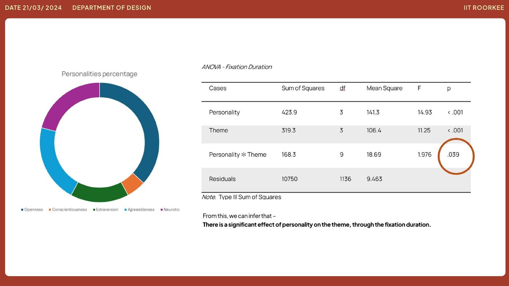

Research paper · Emotional Design, IIT Roorkee
Do different personalities like different car interiors?
In the middle and upper middle class segment of India, car interiors are never custom made for the user. I wanted to find out, through an eye tracking experiment, if personality changes what people are drawn to.
- 16 participants with a driving license, categorised into OCEAN personalities using the Big 10 Inventory.
- 4 themes of car interiors, Comfort, Concise, Hard and Technological, derived from Kansei words.
- Fixation duration was analysed in JASP with a 2-way ANOVA, followed by post hoc tests.
p < .001Personality affected fixation duration (F = 14.93)
p < .001Theme affected fixation duration (F = 11.25)
p = .039Personality and theme interact
I learnt that…Different personalities favour distinct car interior themes. Minor changes through modularity, suited to the personality of the driver, could boost sales and make driving more pleasurable. The themes weren't randomised, which affected what people looked at most, so that's noted for next time.

